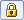
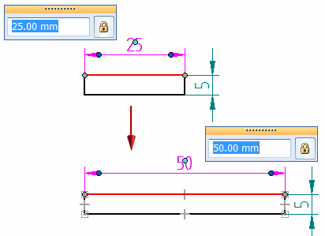
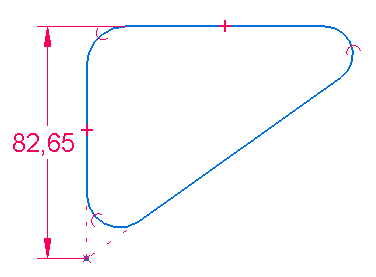
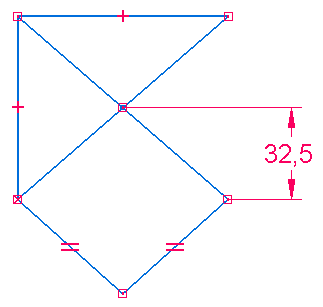

Using driving dimensions to control elements
If a dimensioned element is part of a constrained shape (that is, geometric relationships were applied to it), then the dimensions are driving or driven based on the existing relationships and how the geometry was created.
-
You can use a driving dimension to change the size of an element. If the dimensioned element is on 2D elements that were created with geometric relationships (constraints) applied to them, then the entire sketch changes size along with it.
-
You can expect a driven dimension to change its value to respond to changes in the value of driving dimensions.
-
You can use the Driving/Driven Dimension button

on the dimension value edit box to switch between driving (locked ) and driven (unlocked
) and driven (unlocked  ) dimension values.
) dimension values.
-
The color of a dimension identifies its behavior when you edit it:
-
In draft, profile, and sketches, 2D driving (locked) dimensions are black (1); unlocked (driven) dimensions are dark cyan (2).

You can change the value of a driven dimension, but its value displays the not-to-scale symbol (the underline notation).
-
PMI driving dimensions are red. PMI driven dimensions are blue. For information about PMI dimensions, see the help topic PMI dimensions and annotations.
-
Using dimensions to control elements
You can place a driving dimension that controls the size or location of the element that it refers to. If you change the dimensional value of a driving dimension, the element updates to match the new value.

The value of a driven dimension is controlled by the element it refers to, or by a formula or variable you define. If the element, formula, or variable changes, the dimensional value updates.
Because both driving and driven dimensions are associative to the element they refer to, you can change the design more easily without having to delete and reapply elements or dimensions when you update the design.
When the Intersection option in IntelliSketch is set and you select the Distance Between, you can place a driven dimension that measures to the intersection of two elements.
Changing the behavior of driving and driven dimensions
In general, you can set or clear the Driving/Driven Dimension option on the Dimension command bar, on the 2D dimension value edit box, or on the model Dimension Value Edit dialog box to specify whether a dimension is a driving dimension or a driven dimension.
-
When the lock icon is displayed,
, the dimension is driving. You can edit the value of a driving dimension, but its
dimension value is prevented from being changed when a connected face is moved or
sized. -
When the unlocked icon is displayed , the dimension is driven. You cannot directly edit the value of a driven dimension, but the dimension value is allowed to change when faces connected to the dimensioned edge are modified.
If the Driving/Driven Dimension button is not available, select the Maintain Relationships command in the Relate group on the Home tab or the Sketching tab.
In the Draft environment, dimensions can be placed as either driving or driven, depending upon the setting of the Maintain Relationships command. If Maintain Relationships is on, the dimensions are driving by default. These exceptions apply:
-
Dimensions placed on part views are always driven.
-
Dimensions placed between a 2D view and an element on the drawing sheet can only be driven.
Not-to-scale dimensions
You can override the value of a driven dimension by setting its dimensional value to not-to-scale. For example, if you override the dimensional value that is 15 millimeters (A) to be 30 millimeters, the actual size of the line that you see would still be 15 millimeters (B). Solid Edge underlines the values of not-to-scale dimensions.

The Not To Scale command is available on the context menu when a dimension is selected.
You can change the notation used to identify a not-to-scale dimension using the Symbol option on the Terminator and Symbol tab in the Modify Dimension Style and the Dimension Properties dialog boxes.
Placing driving dimensions to an intersection
Sometimes you need to place a driving dimension to the intersection of two elements. You can do this by dimensioning to a profile point you create using the Point command.
For example, you can create a point at the theoretical intersection of two profile lines, and then use the Distance Between command with the By 2 Points placement option to place a dimension to the point you created. This results in a driving dimension, which you can use to control distance, size, or shape.


To learn how, see Place a driving 2D dimension to an intersection.
Using expressions in dimensions
There are many instances when the dimensions of individual features in a design are related. For example, the bend radius used to manufacture a sheet metal part is usually a function of the stock thickness. You can define and automate these types of design relationships with expressions. You can select a dimension and then use the Variables command on the Tools tab to enter a formula. When the formula is solved, the dimensional value changes to the value that the formula calculates.
You might want to use dimensions with expressions for the following purposes:
-
Drive a dimension by another dimension; Dimension A = Dimension B
-
Drive a dimension by a formula; Dimension A = pi * 3.5
-
Drive a dimension by a formula and another dimension; Dimension A = pi * Dimension B
Using the mouse scroll wheel to change driving dimensions
You can use the mouse scroll wheel to change a driving (locked) or system dimension. As you scroll the wheel, the dimension increases or decreases in 5 percent increments. For example, if the dimension is 100 mm, the dimension will increase or decrease by 5 mm.
You can use the mouse scroll wheel to change a dimension by selecting the dimension you want to change, and then scrolling the wheel forward to increase the dimension or backward to decrease it.
An option on the General page of the Solid Edge Options dialog box controls the mouse scroll wheel function.
-
If the option Enable value changes using the mouse wheel is unchecked, you can use Ctrl+mouse wheel to change a dimension value.
-
If the option is checked, you can use the mouse wheel to change a dimension value.